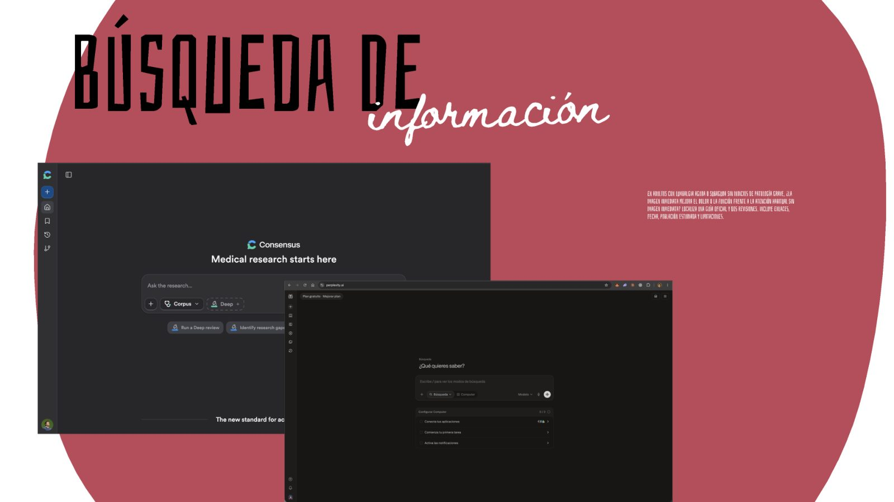
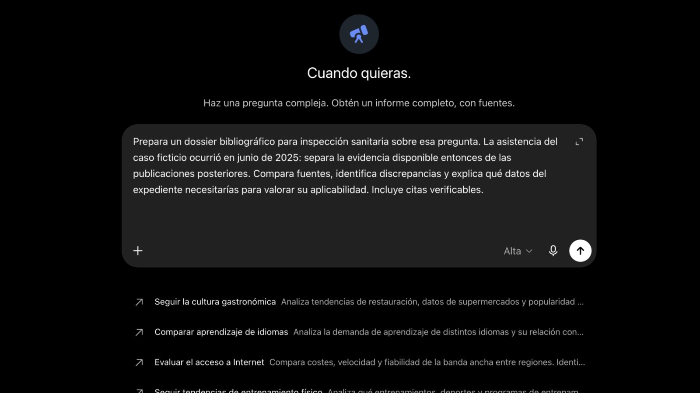

Taller práctico · IA generativa
De una pregunta a un expediente trazable
Seis herramientas de IA aplicadas a la búsqueda bibliográfica y al análisis documental en reclamaciones patrimoniales, siguiendo un mismo caso ficticio de principio a fin.
El hilo conductor
Caso RP-DEMO-01: demora en una prueba de imagen
Todas las demostraciones trabajan sobre el mismo expediente. Es completamente inventado y está preparado para practicar sin datos personales reales.
Una persona consultó por dolor lumbar y sostiene que la demora en realizarle una resonancia prolongó sus molestias y su baja laboral. Disponemos de su reclamación, un extracto de notas asistenciales y un registro de citas.
El reto es reconstruir qué ocurrió, distinguir lo documentado de lo que afirma la persona reclamante e identificar qué información falta. Después investigamos qué evidencia científica había disponible en junio de 2025 sobre cuándo solicitar pruebas de imagen, sin dar por demostrada una relación entre la demora y el daño alegado.
El recorrido
Seis herramientas, un mismo expediente
Cada herramienta se presenta por el resultado que permite producir. En cada paso nos preguntamos qué podemos comprobar y qué sigue sin saberse.
Perplexity
Buscador conversacional: responde citando las páginas en las que se basa.
Útil para pasar de una pregunta vaga a un mapa de fuentes que podemos abrir y leer. La calidad de la respuesta depende de lo concreta que sea la pregunta: población, comparación, resultado y tipo de fuente.
Primero, la pregunta vaga (para ver qué falta)
¿Hay que pedir una resonancia a todos los pacientes con lumbalgia?
Después, la pregunta estructurada
En adultos con lumbalgia aguda o subaguda sin indicios de patología grave, ¿la imagen inmediata mejora el dolor o la función frente a la atención habitual sin imagen inmediata? Localiza una guía oficial y dos revisiones. Incluye enlaces, fecha, población estudiada y limitaciones.
Elige la afirmación principal de tu respuesta. Señala la fuente que la sostiene y el apartado correspondiente. Comprueba población, comparación y desenlace. Explica qué cambiaría si aparecieran síntomas nuevos o si la exploración inicial no estuviera documentada. No asumas datos ausentes.

Qué comprobar en pantalla
- Abrir el enlace original y confirmar título, año y autoría.
- Localizar el pasaje concreto que sostiene la frase de la IA.
- Ver si la frase conserva las condiciones de la fuente (población, síntomas, momento).
- Separar publicaciones anteriores y posteriores a junio de 2025.
Una respuesta con muchos enlaces sigue necesitando que alguien abra al menos uno y lo lea.
A diferencia de un buscador general, Consensus limita sus respuestas a literatura revisada por pares. Muestra cada artículo con su diseño (revisión sistemática, ECA, observacional…), año y revista, lo que ayuda a jerarquizar la evidencia antes de leer.
Probamos la misma pregunta que en Perplexity para comparar qué fuentes aparecen en cada herramienta y cuáles coinciden.
En adultos con lumbalgia aguda o subaguda sin indicios de patología grave, ¿la imagen inmediata mejora el dolor o la función frente a la atención habitual sin imagen inmediata? Localiza una guía oficial y dos revisiones. Incluye enlaces, fecha, población estudiada y limitaciones.
Cómo sacarle partido
- Modo Deep / Deep review: revisa más artículos y devuelve una síntesis estructurada con tabla de estudios.
- Filtros: por año, tipo de estudio o tamaño muestral, útiles para acotar a lo publicado antes de junio de 2025.
- Ficha del artículo: abre el resumen y el DOI; desde ahí se va a PubMed o a la revista.
- Guardar en biblioteca: para reunir las referencias del expediente.
Consensus encuentra artículos, pero una guía oficial (NICE, GuíaSalud) puede no estar en su corpus. Para las guías, Perplexity o la web del organismo siguen siendo necesarias.
Deep Research con ChatGPT
Una investigación planificada que trabaja durante minutos y entrega un informe con fuentes.
La diferencia con una búsqueda es el tipo de encargo: no pedimos una respuesta, pedimos un entregable. El agente propone un plan, consulta decenas de fuentes y redacta un dossier. Mientras trabaja, podemos seguir con otra cosa.
Prepara un dossier bibliográfico para inspección sanitaria sobre esa pregunta. La asistencia del caso ficticio ocurrió en junio de 2025: separa la evidencia disponible entonces de las publicaciones posteriores. Compara fuentes, identifica discrepancias y explica qué datos del expediente necesitarías para valorar su aplicabilidad. Incluye citas verificables.
El informe arranca diciendo que «el usuario no ha especificado cuál es exactamente “esa pregunta”». Deep Research no veía la pregunta anterior, pero dedujo el tema leyendo los tres PDF adjuntos. Lección: el encargo debe ser autocontenido. Esta es la versión corregida:
Prepara un dossier bibliográfico para inspección sanitaria sobre esta pregunta: en adultos con lumbalgia aguda o subaguda sin indicios de patología grave, ¿la imagen inmediata mejora el dolor o la función frente a la atención habitual sin imagen inmediata? Adjunto los tres documentos de un caso ficticio (D1 reclamación, D2 extracto asistencial, D3 registro de cita). La asistencia ocurrió en junio de 2025: separa la evidencia disponible entonces de las publicaciones posteriores. Compara fuentes, identifica discrepancias y explica qué datos del expediente necesitarías para valorar su aplicabilidad. Prioriza guías oficiales, revisiones sistemáticas y estudios originales. Incluye citas verificables con DOI o PMID. No inventes datos ni referencias, no presentes la búsqueda como revisión sistemática y no emitas conclusiones de responsabilidad.

El resultado
Un dossier con resumen ejecutivo, metodología de búsqueda, tabla de evidencias y la bifurcación clave del caso: «menos fuerza» no equivale a un déficit motor objetivado. Sin exploración documentada no se sabe qué rama de la evidencia aplica.
Leer el dossier generado (PDF)
Al revisar el informe
- Elegir dos frases comprobables y abrir sus fuentes.
- Revisar fecha de publicación y población de cada cita.
- Buscar si ha convertido «no consta» en «no ocurrió».
Claude: un artefacto interactivo
Programación para todos: describir una herramienta en lenguaje natural y usarla al momento.
Claude puede crear artefactos: pequeñas aplicaciones que se ejecutan dentro de la propia conversación y se pueden compartir con un enlace. No hace falta saber programar: se describe qué debe hacer, se prueba y se pide lo que falte.
Adjuntamos los tres PDF del expediente y pegamos este encargo:
Crea un artefacto interactivo para explorar el expediente ficticio de los tres PDF adjuntos. Quiero una aplicación sencilla con: – Una cronología de los hechos. – Filtros por documento y un buscador. – La posibilidad de pulsar cada hecho para ver su fuente y una cita textual. – Un apartado con las diferencias entre versiones y los documentos que faltan. – Un botón para descargar la cronología en CSV. Usa únicamente los datos de los PDF. Distingue lo que afirma la persona reclamante de lo que consta en los registros. Conserva las fechas diferentes sin elegir una como correcta y no inventes diagnósticos ni conclusiones de responsabilidad. Diseño limpio, con fondo blanco, texto oscuro y detalles amarillos. Letra grande para proyectar y etiqueta visible «Caso ficticio». Debe funcionar dentro del artefacto, sin servicios externos. Toma las decisiones necesarias y créalo directamente.
Pruébalo aquí: una versión del artefacto construida con los datos de D1–D3
Expediente RP-DEMO-01Cronología documental · pulsa cada hecho para ver su fuente
Caso ficticio¿Cuándo se solicitó la prueba de imagen?
El registro administrativo y la emisión clínica pueden ser momentos distintos. Aclararlo requiere el formulario original de petición.
Información sobre cuándo volver a consultar
Ambas versiones se conservan. El extracto no permite saber qué se explicó.
Resultado de la resonancia
«Problema de disco» es una expresión de la reclamación, no un diagnóstico documentado.
Sensación de menor fuerza
Las fechas coinciden, pero en ambos casos es un síntoma referido. No hay exploración que lo objetive.
- Informe radiológico original e imágenesD1.4 · D2.3 · D2.4 · D3.3 · D3.4
- Formulario clínico de petición y fecha de emisión clínicaD3.1 · D3.4
- Exploración neurológica completa del 2 de junioD2.1
- Contenido de los motivos de reconsulta explicadosD2.1
- Medida objetiva de fuerza e informe de la valoración posteriorD2.2
- Registro completo de derivaciónD2.4
- Partes de baja, confirmación y altaD1.5 · D2.4
- Descripción de las tareas del puesto de trabajoD2.4
Los nuevos agentes: Codex
Un agente que lee una carpeta, crea archivos, los revisa y corrige su propio trabajo.
Hasta aquí cada herramienta devolvía una respuesta. Un agente recibe un objetivo, usa herramientas (leer PDF, escribir archivos, ejecutar comprobaciones), revisa el resultado y repara lo necesario. Nosotros damos la carpeta con los tres PDF y el encargo.
Prepara un dossier de trabajo para un inspector sanitario utilizando los tres PDF de esta carpeta. Todo el caso es ficticio. Lee los documentos y crea una subcarpeta llamada «resultado» con: 1. cronologia.csv: fechas, hechos, tipo de fuente y documento de origen. Debe poder abrirse en Excel. 2. resumen.docx: una página, con tono profesional, que explique qué está documentado, qué afirma la persona reclamante y qué dudas quedan abiertas. 3. pendientes.txt: documentos que faltan y qué permitiría aclarar cada uno. Después, vuelve a abrir los archivos creados y compruébalos contra los PDF originales. Corrige cualquier afirmación sin respaldo, fecha mal atribuida o diferencia entre versiones que hayas omitido. Guarda en revision.txt las comprobaciones realmente realizadas, las correcciones y las dudas que siguen pendientes. Conserva las distintas fechas sin escoger una como correcta. No inventes datos ni conclusiones de responsabilidad. No modifiques los originales. Completa el trabajo y muéstrame los archivos al terminar.
Lo que entrega el agente
cronologia.csvTabla de hechos con fecha, tipo de fuente y documento. Se abre en Excel.
resumen.docxUna página: lo documentado, lo alegado y las dudas abiertas.
pendientes.txtDocumentos que faltan y qué aclararía cada uno.
revision.txtAutocomprobación contra los originales y correcciones hechas.
Por qué importa el último archivo
- El agente no se limita a producir: vuelve a abrir su trabajo y lo contrasta.
revision.txtdeja rastro de qué se comprobó de verdad y qué no.- Los originales quedan intactos; todo lo nuevo va en
resultado/.
Un agente con acceso a archivos debe trabajar en una carpeta acotada, con datos ficticios o autorizados, y sin permiso para enviar ni publicar nada. La salida es un borrador para revisión profesional.
Avatar sintético con HeyGen
Convertir un guion revisado en una cápsula de vídeo con un avatar.
«Caso ficticio: qué podemos afirmar» · 53 s · avatar de Javier Fuentes generado con IA, con la Plaza Mayor de Salamanca de fondo.
HeyGen genera vídeos con un avatar (de catálogo o creado a partir de una grabación propia) que lee un guion con voz y sincronización labial. También traduce vídeos a más de 175 idiomas y convierte presentaciones en vídeo.
Usos en inspección y formación
- Cápsulas formativas breves sobre un procedimiento.
- Explicaciones estándar para ciudadanía, en varios idiomas.
- Resúmenes de una jornada o de un criterio de trabajo.
- Etiquetar siempre como «Avatar generado con IA».
- Usar solo la imagen y la voz propias o con consentimiento expreso.
- El guion se revisa antes; el vídeo no debe improvisar contenido clínico.
Para llevarse
Reglas de oro
La IA ayuda a ordenar el trabajo. La revisión de las fuentes y la valoración profesional siguen formando parte del proceso.
Pregunta concreta
Población, comparación, resultado y fecha. Una pregunta vaga produce una respuesta vaga con muchos enlaces.
Abrir la fuente original
Comprobar título, año y el pasaje exacto. La cita que resume la IA puede perder las condiciones de la fuente.
«No consta» no es «no ocurrió»
La ausencia de registro no demuestra la ausencia de un síntoma ni de una explicación.
Separar quién dice qué
Alegación, registro asistencial y registro administrativo son fuentes distintas. Cada hecho, con su origen.
Conservar las discrepancias
Si hay dos fechas, se muestran las dos. Elegir una sin el documento que lo aclare es una conclusión, no un dato.
Datos ficticios o autorizados
No subir historias clínicas reales a herramientas públicas. Para practicar, casos inventados como RP-DEMO-01.
Comprueba lo aprendido
Cuatro preguntas rápidas
1. El extracto D2.1 no recoge una exploración neurológica completa. ¿Qué podemos afirmar?
2. La reclamación sitúa la solicitud el 10 de junio y el registro el 12. ¿Qué fecha usamos?
3. ¿Qué enseña el arranque del dossier de Deep Research generado en directo?
4. En el encargo al agente Codex, ¿para qué sirve revision.txt?
Fuentes de consulta
Referencias del ejercicio
Materiales para practicar. Su aplicabilidad a un caso concreto debe revisarse y no equivale a una valoración clínica ni jurídica.
Evidencia clínica
- NICE NG59 · Low back pain and sciatica in over 16s
Guía oficial. Recomendaciones sobre imagen en atención no especializada. - Chou R et al. Imaging strategies for low-back pain. Lancet 2009
Revisión sistemática y metaanálisis. PMID 19200918 · DOI 10.1016/S0140-6736(09)60172-0
Marco normativo
- Ley 40/2015, de Régimen Jurídico del Sector Público
Responsabilidad patrimonial de las Administraciones Públicas (arts. 32 y ss.). - Ley 41/2002, de autonomía del paciente
Derecho a la información y contenido de la historia clínica.